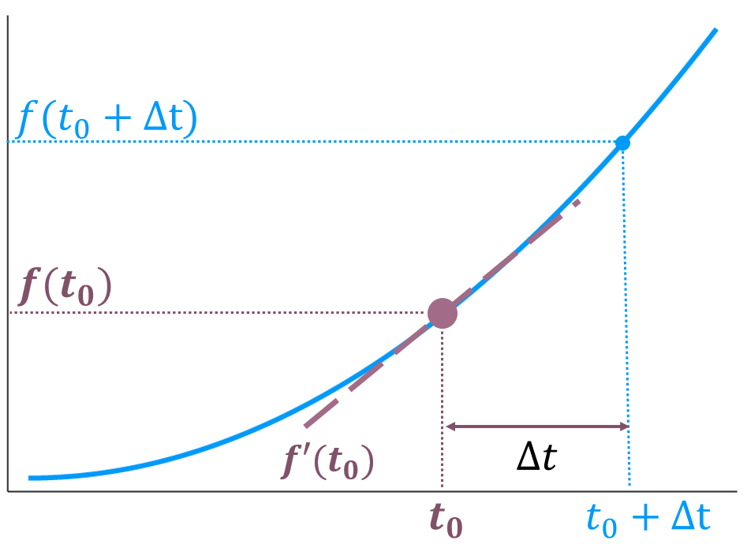
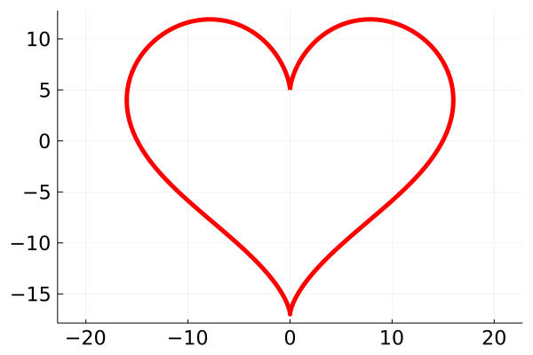

Derivada
Em algum momento durante seu curso de Cálculo 1, você viu a definição de Derivada através do uso de Limite em um ponto \(t_0\) é :
\[ f'(t_0) = \lim_{\Delta t \to 0} \frac{ f(t_0 + \Delta t) - f(t_0) }{\Delta t}. \]

Para ser estritamente correto, o valor de \(\Delta t\) deve ser um infinitesimal. Contudo, fazem alguns séculos que engenheiros e físicos assumem que \(\Delta t\) seja apenas um valor pequeno o suficiente1, permitindo calcular derivadas por força bruta.
Pelo que escrevi até o momento, a derivada em certo posição deveria ser uma expressão simples, apenas calculamos:
\[ \frac{ f(t_0 + \Delta t) - f(t_0) }{\Delta t} \tag{1}\]
Contudo, aparecem erros de arredondamento ou erros de truncamento e nossas respostas perdem precisão dependendo do valor de \(\Delta t\).
Os erros de truncamento não são imprevisíveis, em muitos casos sabemos a Ordem de Magnitude, o big oh, \(\mathcal{O}(\Delta t)\) do nosso problema,por exemplo, para a Equation 1, o erro de truncamento é \(\mathcal{O}(\Delta t)\).
Livros de Cálculo Numérico ou Análise de Algoritmos trazem uma discussão mais elaborada sobre esse assunto. Aqui, o ponto importante é conhecer o vocabulário de cálculo numérico e seus conceitos.
A Table 1 e Table 2 contêm fórmulas que você fará uso durante esse projeto.
| Fórmula | Erro | |
|---|---|---|
| Para Frente de 2 pontos | \(f'(t_0)\) = \(\frac{ f(t_0 + \Delta t) - f(\Delta t) }{\Delta t}\) | \(\mathcal{O}(\Delta t)\) |
| Para traz de 2 pontos | \(f'(t_0)\) = \(\frac{ f(t_0) - f(t_0 - \Delta t) }{\Delta t}\) | \(\mathcal{O}(\Delta t)\) |
| Simétrica de 3 pontos | \(f'(t_0)\) = \(\frac{ f(t_0+ \Delta t) - f(t_0 - \Delta t) }{2\Delta t}\) | \(\mathcal{O}(\Delta t^2)\) |
| Simétrica de 5 pontos | \(f'(t_0)\) = \(\frac{ f(t_0- 2\Delta t) -8f(t_0 - \Delta t) + 8f(t_0 + \Delta t) - f(t_0 + 2\Delta t)) }{12\Delta t}\) | \(\mathcal{O}(\Delta t^4)\) |
| Fórmula | Erro | |
|---|---|---|
| Simétrica de 3 pontos | \(f''(t_0)\) = \(\frac{ f(t_0 - \Delta t) - 2f(t_0) + f(t_0 + \Delta t) }{\Delta t^2}\) | \(\mathcal{O}(\Delta t^2)\) |
| Simétrica de 5 pontos | \(f''(t_0)\) = \(\frac{ -f(t_0 - 2\Delta t) + 16f(t_0 - \Delta t) - 30f(t_0) + 16f(t_0 + \Delta t) - f(t_0 + 2\Delta_x)}{12\Delta t^2}\) | \(\mathcal{O}(\Delta t^3)\) |
| Assimétrica de 4 pontos | \(f'''(t_0)\) = \(\pm \frac{ -f(t_0 \mp \Delta t) + 3f(t_0) - 3f(t_0 \pm \Delta t) + f(t_0 \pm 2\Delta t)) }{\Delta t^3}\) | \(\mathcal{O}(\Delta t)\) |
| Assimétrica de 5 pontos | \(f'''(t_0)\) = \(\frac{ -f(t_0 - 2\Delta t) + 2f(t_0 - \Delta t) - 2f(t_0 + \Delta t) + f(t_0 + 2\Delta t)) }{2\Delta t^3}\) | \(\mathcal{O}(\Delta t^2)\) |
Sobre a temática de erros de truncamento, eu recomendo ao leitor curioso, a palestra do professor John L. Gustafson, discutindo sobre erros numéricos, disponível no YouTube.
Vamos fixar os novos conceitos calculando a derivada de alguma função conhecida, e para aumentar sua cultura, vamos calcular a primeira derivada da Equação Parametrizada de um Coração:
\[ \begin{alignat}{4} x(t) &= 16sin^3(t)\\ y(t) &= 13cos(t) - 5cos(2t) - 2cos(3t) - cos(4t) \end{alignat} \tag{2}\]

Baseado na Equation 2 :
Obtenha a expressão analítica da Primeira Derivada, \(x'_{exato}\), e Segunda Derivada \(x''_{exato}\).
Implemente as funções Primeira e Segunda Derivada Simétrica de 3 pontos.
Sorteie um número aleatório para \(t_0\).
Crie um vetor com valores de \(\Delta t \in [10^{-8}, 10^{-1}]\) em escala logarítmica.
Calcule \(|x'(t_0) - x'_{exato}(t_0)|\) para diferentes valores de \(\Delta t\)
Repita o item anterior para a Segunda Derivada.
Exiba os resultados em uma Figura de escala log-log. Para melhor interpretação, inverta o eixo X.
Agora que você já sabe derivar uma função \(f(t)\), usaremos o mesmo raciocínio com vetores. Assim, podemos calcular a derivada da Lei de Planck
\[ E(\lambda; T) = \frac{2hc^2}{\lambda^5}\frac{1}{e^{hc/\lambda kT} - 1} \times 2.161413 \cdot 10^{-14}\pi \frac{W^2}{m^2 nm} \tag{3}\]
Essa expressão da Lei de Planck não é apresentada em livros textos de física, ela fornece a Radiância solar, contudo, medições de satélite correspondem a Irradiância. Para mais detalhes, confira a discussão em @p3_irradiancia_treta e uma explicação mais esclarecedora em @p3_irradiancia_detalhe.
- Nesse exercício, graficaremos a Lei de Planck junto a dados experimentais. Não é necessário entender as origens e fundamentos da Equation 3 para realizar o exercício, mas se lhe interessa, sugiro o capítulo 3 do livro @p3_book_radiation.
Como essa equação é famosa, pesquise os valores das constantes fundamentais, e escreva uma função em Julia que calcule \(E(\lambda; T)\)
Com \(T=6000\), e um vetor \(\lambda \in [200, 2500]\, \text{nm}\), calcule o espectro de irradiância do Sol armazenando os resultados em um vetor chamado \(E\_\lambda\)
Exiba o espectro que você obteve em uma figura, e normalize o eixo vertical, o comprimento de onda, em nanômetros, ou seja, divida todos os valores do eixo vertical por \(1 \text{nm} = 10^{-9}\text{m}\). Assim, o eixo vertical poderá ser descrito como ‘\(\lambda \; [\text{nm}]\)’.
Clique aqui e baixe os dados que usaremos, esses dados foram obtidos do National Renewable Energy Laboratory @p3_satelite. A primeira coluna é o Comprimento de Onda multiplicado por um fator \(10^9\) (ou seja, em unidades de \(nm\)), e a segunda é a irradiância em \(W m^{-2} nm^{-1}\). Sobreponha esses dados experimentais com a figura produzida com os dados teóricos.
Nosso próximo objetivo é calcular o comprimento de onda no qual a irradiância é máxima, vamos denominar esse valor \(\lambda^*\). A nível computacional é muito fácil, é só usar o comando findmax(). Se os valores do comprimento de onda estão em um vetor \(\lambda\)
E_max, idx_max = findmax(E_λ)
λ_star = λ[idx_max]Sinto informar, mas nós usaremos o caminho das pedras.
Vamos achar o máximo com conhecimentos de Cálculo 1: o máximo (ou minimo, ou inflexão) de uma função \(f(x)\) existe quando a primeira derivada é nula, \(f'(x^*) = 0\).
A expressão analítica de \(E'(\lambda)\) disponível no Wikipedia é @p3_Wien \[ E'(\lambda; T) = 2hc^2\left ( \frac{hc}{kT\lambda^7}\frac{e^{hc/\lambda kT}}{(e^{hc/\lambda k T} -1 )^2} - \frac{1}{\lambda^6}\frac{5}{e^{hc/\lambda k T} -1 } \right ) \tag{4}\]
- Implemente a Primeira Derivada Simétrica de 5 Pontos e aplique sobre os Dados Teóricos que você tem.
AvisoNão calcule a primeira derivada sobre os dados de satélite, pois as oscilações são grandes o suficientes para atrapalhar nossa análise - e não quero que voê se preocupe com mais problemas.
ObservaçãoVocê esta calculando derivada de vetores, então alguns pontos nas extremidades ficarão sem derivadas, a menos que algum critério especial seja definido. Não faremos nada, simplesmente ignore a derivada nas bordas.
Diminua a magnitude dos dados com uma normalização do tipo \(f \rightarrow f/max(f)\)
Crie um vetor com os valores analíticos e também os normalize
Compare com os valores numéricos com os analíticos em uma figura
Footnotes
O valor exato de \(\Delta t\) para ser pequeno o suficiente é uma discussão por si própria. Para facilitar sua vida, use o valor fornecido durante os exercícios.↩︎